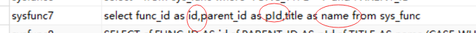
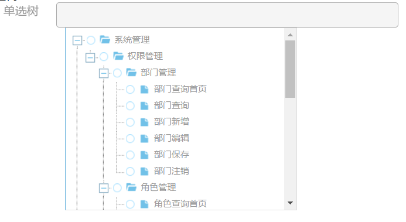
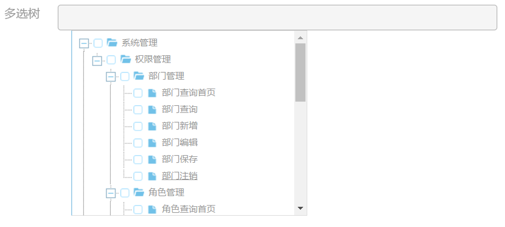

input_tree标签
input_tree标签的属性 :
注意：remote验证需要开启同步验证属性，详细见form标签
input_tree标签有属性分别为id、name、size、checkbox_have、tree_id、sql_key、readonly，其中id、tree_id、sql_key为必填项
* id ： id属性
name ： name属性
size ： size为尺寸标签,可以填的数值范围为（1-12）,如size="6",默认size为5
checkbox_have ： 为是否有复选框，默认false
* tree_id ： tree树对象的id
* sql_key ： sql_key属性为select标签后台执行的sql的key值
readonly ： 可以填写的值为true和false，默认false
sql_condition : sql_condition属性用于配合sql_key属性，当对应的后台sql需要传入参数替
换“？”占位符时填写，也可以用登录用户的id替换占位符如sql_condition="ACC_RECHG_TYPE,session.operId",其中‘ACC_RECHG_TYPE’会用来替换第一个占位符，登录用户的id会用来替换第二个占位符； 注意：【1.4】版本后分隔符由“，”替换成为“&&&” label : label为标签的前缀标签属性,如label="name,true,2"；其中label属性中含有三个值，第一个值为前缀标签的名字；第二个值为前缀标签是否加红色星号*即必填项标志；第三个值为前缀标签的尺寸,
可填的数值范围为（1-12）,默认尺寸为1；引入方式：label="name,true,2" ； label="name,true" ；
label="name" ；label="name,,2" 即三个值都非必填项
child_info 【1.2.3】: 该属性是为了使input_tree拥有级联功能，使用方式类似级联组件，可以参考级联组件，如：child_info=[ {"child_id":"name34","sql_key":"sysfunc6","show_field":"title","value_field":"func_id","sql_condition":"1","num_for_selected":"1"}]
其中sql_condition为sql执行时需要加入的条件，num_for_selected属性为父级选中项的值加入占位符的位置， 注意：配合input_tree的级联的标签只有cas_select_childchild_sql_condition【1.3】：该属性是为了解决el表达式在ftl数组属性中解析不了的问题，即child_info属性中的sql_condition属性被该属性替换，引入方式：child_sql_condition="${operVo.brch.brchId},2;4"，child_info属性中不同不同元素的sql_condition属性需要的值用‘；’分割
select_click_node_only【1.7】：该属性主要是为了控制input_tree组件解除父子级节点的关联，即点击节点文字时只获取点击节点的值，父节点和子节点的值不获取 注意：该标签在【1.7】后，复选框树点击文字项，只会选中本节点和关联的父节点，不会勾选子节点，而勾选复选框时和原先的功能一致，单选框功能和原先的不变
cust_get_data_clazz【2.1】： 该功能用于支持自定义加载tree的初始化数据，如果该项存在，则将屏蔽sql_key的加载数据功能，指定加载类和方法,规则示例将在下面展示，具体示例见2.0平台基础项目demo页
cust_get_data_param【2.1】： 该功能用于支持自定义加载tree的初始化数据，如果该项存在，则将屏蔽sql_key的加载数据功能，指定加载类和方法的参数（现阶段只支持单个参数且为Map类型）,规则示例将在下面展示，具体示例见2.0平台基础项目demo页
search_have【2.1】: search_have属性为是否开启搜索功能，默认false，当为true时搜索功能可用
parent_multiselect_child_single【2.4】: parent_multiselect_child_single属性为是否开启子级解除关联，且只能单选
cust_relation【2.4】: cust_relation属性用于控制上下级关系的解除与否，如cust_relation={"cancel_parent_relation":"false","cancel_children_relation":"true","select_more":"false"} 其中cancel_parent_relation为是否解除父级关联，默认false，cancel_children_relation为是否解除子级关联，默认false，select_more为被点击的节点是否可以多选，默认true
expand_tree【2.4】： 该属性为控制初始化是否展开树节点，默认true
input_tree标签的引入方式 :
<@input_tree label="单选树" size="4" id="but" tree_id="tree" name="valuetree" sql_key="sysfunc7" />
<@input_tree label="多选树" size="5" id="but1" tree_id="tree1" name="valuetree1" sql_key="sysfunc7" checkbox_have="true"/>
对应sql语句 :

上图中红色别名必须有，且区分大小，分别对应 : 树节点的id，父级id，和显示的text名
显示结果 :


级联的引入方式 :
<@input_tree label="测试树,false,2" size="4" id="but3354" tree_id="tree3434" name="valuetree34" sql_key="sysfunc7" checkbox_have="true"
child_info=[
{"child_id":"name34","sql_key":"sysfunc6","show_field":"title","value_field":"func_id"}
]
/>
<@cas_select_child label="测试级联,,2" id="name34" name="name43" search_have="true"/>
input_tree的数据重新加载方法 :
treeReload(treeId,treeData);//js代码
input_tree获取被勾选的节点的id的方法 :
getCheckedNodesIds(treeId);//js代码，返回数组
input_tree获取被勾选的节点的text的方法 :
getCheckedNodesText(treeId);//js代码，返回字符串，以","分割
input_tree绑定oncheck事件方法：
/**
*绑定input_tree 绑定oncheck方法
*tree1为treeId
*/
function tree1OnCheck(){
console.log("ok");
}